Chapter 3: Introducing the iD Editor¶
Learning Objectives
Understanding iD Editor interface
Editing OpenStreetMap using the iD Editor
Saving and Uploading edits
You have succeeded on creating OpenStreetMap account and you’re eligible to edit OpenStreetMap. Now we will learn how to add your data and edit it using an editor that runs in the browser called the iD Editor.
iD Editor is a web based OpenStreetMap editor that allows you to add and make changes to the OpenStreetMap data easily and fast by using spatial data sources such as satelite imagerY, GPS, and FiledPapers.
3.1 STARTING ID EDITOR¶
Before you start, your computer must be connected to the internet. Open your browser, then go to OpenStreetMap website http://www.openstreetmap.org , log in to your account and zoom in to the area that you want to edit until the Edit menu is active. Click on the arrow sign next to the as shown in the figure below.
Activating iD Editor on OpenStreetMap website¶
3.2 iD Editor Interface¶
The figure below shows the main features of the iD editor.
iD Editor Interface¶
Feature Panel: This panel will show the attributes of an object selected from the map. You can add and edit attribute data from this panel.
Panel tools: This Panel shows some basic editing functions, such as:

|
Adding a point |
| 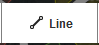 | Adding lines |
| 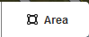 | Adding an area (polygon) |
Undo |
|
Redo |
|
Saving your changes |
Map Panel: This panel shows some functions to set and alter the map display
Zoom In |
|
| 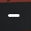 | Zoom Out |
Go to your current location |
|
| 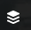 | Set the map background |
| 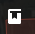 | Getting Help |
Information panel: At the very bottom of the image area, this panel shows some information such as those who have contributed map edits in this area, as well as attribution for imagery sources and other map data.
3.3 Setting the Map Background¶
Before you start editing, you can change the map background. Now click on the layer button
Then a new panel will pop up like this:
Background and brightness setting in iD Editor¶
There are several ways to adjust the background in iD Editor. They are:
You can set the brightness of the satellite imagery by clicking on this box
There are 3 brightness you can choose: 100%, 50%, and 0%. Try all of them to see the difference.
You can also set the provider of satellite imagery depending on which one is available for your desired area (the standard choice is Bing Aerial Imagery). You can also set OpenStreetMap map as your background.
Also, if you want to make a previously uploaded Field Papers to be your background, please click on the Custom choice and put the FieldPapers URL (for example: http://fieldpapers.org/snapshot.php?id=fdsbgzns#17/-6.20049/106.82533) on the column as seen below:
Inserting Field Papers into iD Editor¶
You can add your GPS tracks and waypoints that are saved on your computer (they must be in GPX file format). Just click on your GPX, hold, and drag it to the editor page.
If there is a known satellite imagery offset, you can do a correction by clicking on Fix misalignment until a box seen below shows up:
You can set the correction by clicking on the navigation buttons
Click on
to bring the imagery back to the initial position.
3.4 BASIC EDITING WITH ID EDITOR¶
Before we start practicing using iD Editor, first navigate to the desired area on the map that you want to edit. You can pan around the map by clicking on your mouse and dragging the map to your area of interest.
Adding a Point¶
To add a point feature, click on
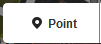You will see the cursor change into a plus sign (+). Now, click on the object that you want to map. For example, you see a building on the map and you know that building is a hospital. Click on the building.
Adding a point in iD Editor¶
Now, you can see there’s a new point. At the same time, the feature panel will be showing you attributes that you can choose depending on the object type. Now type Hospital on the Search section, and choose Hospital to add this feature to the map, as shown in the figure below.
Adding information to a point in iD Editor¶
The point symbol will change automatically, and the feature panel will change into a form which can be filled with information about the hospital, such as the name of the hospital, the address, and other information about this feature.
Note
Features may have a different forms - points, lines, or polygons. It will depends on the type of the feature, the mapping scale, and the quality of imagery.
If you want to move the location of that point, you can click on the object then hold it and move it to the new location. If you want to delete the object, click on the object, a delete button will show up.
Click on that button to delete the object.
Adding a Line¶
Click on:

And again you will see the cursor change into a plus sign (+). Suppose you want to draw a road. To do this, first click at one of the ends of the road, then just move your cursor to and keep clicking along the way of the roads and follow it until a road line formed. Double click to end the line and the feature panel will appear again on the left side of the window.
Adding lines in iD Editor¶
The feature panel will display some attributes for you to choose from, depending on the type of your line. You can also move the points in the line by clicking on a point and move it. The other thing you can do is move the line by clicking on it, holding down the mouse button, and moving the line. Also, when you click on a point (vertex) on the line, you will find some additional functions as shown in the figure below:

|
Deleting/removing the point from the line |
Separating a point that is attached to other object. |
|
| 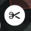 | Spliting a line into two different parts. It is useful when there are different attributes in a long line (For example, different road names) |
Also, when you click on the line (in between points), you will find additional functionality as shown in the figure below:
| 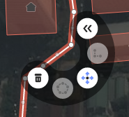 | Removing the line |
| 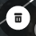 | Forming the line into a circle |
| 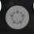 | Moving the line position |
Creating the angles of the line into right-angled line |
|
| 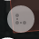 | Reversing the line direction |
Adding an Area (Polygon)¶
To add an area, or polygon feature, click on the button below:
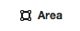Again the cursor will change to a plus sign (+). Using the imagery as a guide, trace the area by clicking on the corners of the feature, as shown in the figure below.
Adding area/polygon in iD Editor¶
As with point and line features, when you click on one of the point on the polygon, you will see additional editing functionality. Similarly, clicking on the line of the polygon (between points) will reveal additional editing operations available to you.
3.5 Saving your Changes¶
Click on the button below:

to save your changes. Pay attention to the panel on your left side that will show something like this:
Saving your changes in iD Editor¶
Fill in the Comment column with a brief note about the changes made in that area so that other users can note your edits. Then click Save.
3.6 Additional Attributes¶
When you add attributes to features, you can make the data more useful by adding more information. The icons shown in the figure below help you to add additional details to your map data:
Adding elevation information |
|
Adding notes |
|
Adding contacts/phone number |
|
Adding sources |
|
Adding website information |
|
Add information on the availability of accessibility for people with disabilities |
|
Adding Wikipedia links |
Tags list on iD Editor
In addition, you can also add your own attributes by clicking on the icon
This will raise a form allowing you to add your own attributes:
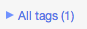Click on the + sign to add a key and value that you want. For guidance, consult the full list for key/value pairs here: Wiki OpenStreetMap Map Features
Adding a tag in iD Editor¶
Summary¶
You should now be able to add your data to OpenStreetMap using the in-browser iD Editor. You also learned how to digitize the 3 types of objects in OpenStreetMap: points, lines, and areas (polygons). In the next chapter, we will learn about another editor, the Java OpenStreetMap editor, or JOSM as it is popularly known.